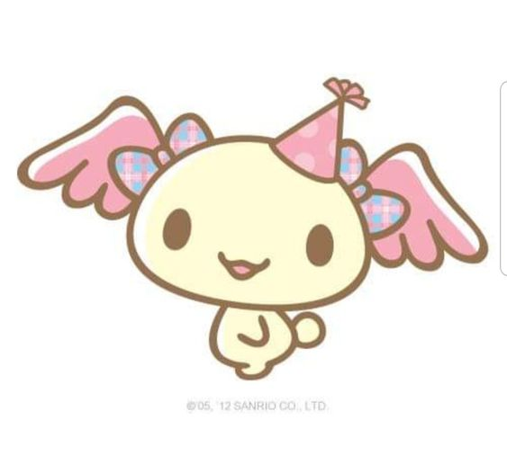
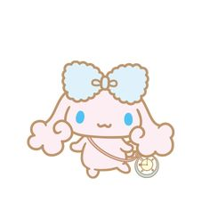

¿Qué es?
Cinnamoroll World es una serie y manga creada en 2001 en Sanrio por Miyuki Okumura. El personaje principal es un cachorro blanco con orejas largas, ojos azules, una cola rizada que se asemeja a un rol de canela. Este personaje nación en las nubes el 6 de Marzo.

Historia
En un día soleado con los roles de canela en el horno, mientras la dueña del Café Cinnamon estaba mirando al cielo, apareció un cachorro que parecía una gran nube, lo que la hizo pensar -“Quizás este pequeño cachorro vino atraído por el delicioso olor de los ricos roles de canela...” ¡Y no se equivocaba! El cachorro fue atraído por el olor que desprendía el local. La dueña observó que su cola era rizada y regordeta como un rol de canela, por lo que decidió llamarlo Cinnamoroll. La fama llegó enseguida al cachorrito que se hizo muy popular entre los clientes y pasó a ser la mascota oficial del café. Ahora, la gente de la cuidad dice que lo pueden ver paseando por la terraza o lo pueden ver volando por toda la ciudad en busca de nuevas aventuras, junto a sus amigos Chiffon, Mocha, Espresso, Cappuccino y el más pequeño de todos Baby Milk.

Curiosidades
-Se confirma que "Cinnamoroll" no es su nombre real. En cambio, se utiliza como nombre artístico o marca registrada en el extranjero, de manera similar a como Hello Kitty es el nombre artístico de Kitty White.
-Cinnamon vive con Anna en Café Cinnamon, aunque nunca ha aparecido fuera de Cinnamoroll: The Movie.
-Se advirtió a Okumura que no usara el azul como color de imagen de Cinnamon, por temor a ahuyentar a la población de fans femeninas. Esto terminó siendo un movimiento inteligente, convirtiendo a Cinnamon en un personaje único en la alineación de Sanrio.
-Los amigos de Cinnamon fueron creados por el deseo de Okumura de que los fanáticos eligieran el personaje que mejor los representara, en lugar de que los personajes simplemente desempeñaran papeles secundarios.
-En 2015, la cuenta oficial de Twitter fue bombardeada por trolls de Internet, y los usuarios lanzaban amenazas y otros comentarios abusivos en las respuestas. Durante este tiempo, los amigos de Cinnamon publicaron en la cuenta en un esfuerzo por protegerlo, siendo la publicación más popular de Chiffon .
| Personajes más famosos | Personajes menos famosos |
|---|---|
Cinnamoroll
|
Baby milk 
|
| Azuki  | Princesa Poron  |